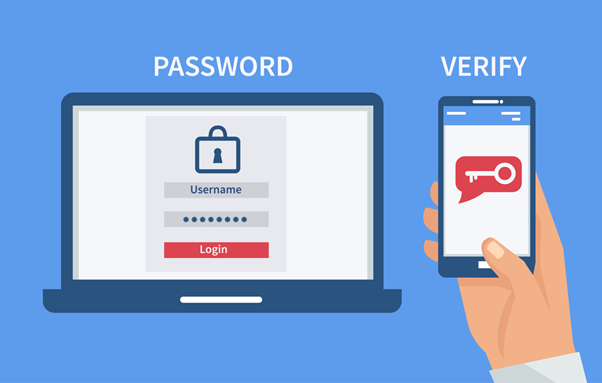

Vertrouwelijkheid
Vertrouwelijkheid is een van de belangrijke aspecten. Voordat er toegang wordt verleend tot persoonlijke gegevens, zal er een controleproces genaamd authenticatie
plaatsvinden. Authenticatie kan plaatsvinden via iets dat de gebruiker weet (zoals een wachtwoord), iets dat de gebruiker heeft (bijvoorbeeld een sleutel), of iets dat
de gebruiker is (zoals een vingerafdruk). Na identificatie, waarbij wordt gevraagd "Wie ben je?", volgt verificatie met de vraag "Ben jij wie je zegt dat je bent?". Dit
gebeurt door gegevens te vergelijken met bijvoorbeeld een database. Het combineren van twee vormen van authenticatie, zoals iets dat je weet en iets dat je hebt, wordt
"two factor authentication" genoemd. Dit wordt vaak gebruikt op websites, waarbij gebruikers bijvoorbeeld een verificatiecode moeten invoeren naast hun wachtwoord. Ook
wordt er screening gedaan, waarbij personen of voertuigen worden geïdentificeerd, en de acties die worden ondernomen als ze op een blacklist staan.
Integriteit
Dit stuk legt uit hoe het cijfersysteem op school de toegang en rechten van gebruikers controleert. Verschillende gebruikersrollen, zoals docent, leerling en beheerder,
hebben verschillende niveaus van rechten. Dit ligt aan je rol. Het proces van controleren of een gebruiker toegang heeft, wordt beschreven als vertrouwelijkheid, terwijl
het controleren van de rechten van een vertrouwde gebruiker wordt aangeduid als autorisatie of integriteitscontrole.
| Eis |
Controlevraag |
| Volledigheid |
Ontbreekt er iets? |
| Relevantie |
is de informatie afgestemd op het te bereiken doel? |
| Betrouwbaarheid |
Is de informatie correct en afkomstig van een goede bron?
|
| Overzichtelijkheid |
Is de informatie goed gestructureerd? |
| Beschikbaarheid |
Is de informatie op het juiste moment beschikbaar? |
| Doelgerichtheid |
Is de informatie gericht op de gebruiker (de doelgroep)? |
|
|
Integriteit betekent dat gegevens alleen door gebruikers met de juiste rechten verwerkt mogen worden, zoals in het cijfersysteem. Het concept van integriteit wordt breder toegepast, bijvoorbeeld in computernetwerken waar bepaalde schijven of mappen alleen beschikbaar zijn voor specifieke gebruikersrollen. Het belang van integriteit wordt benadrukt bij het delen van bestanden, waarbij checksums dienen als 'vingerafdrukken' om de integriteit van het bestand te controleren. Back-ups worden genoemd als een andere methode om de integriteit van data te garanderen.
Om typefouten te voorkomen bij het invoeren van IBAN’S is er een systeem gemaakt. Het systeem, vergelijkbaar met een checksum, werkt in 4 stappen:
Verplaats de eerste 4 letters naar het einde van het IBAN
Vervang elke letter door twee cijfers, volgens het systeem A = 10, B = 11, enz.
Bereken het getal modulo 97. Dit houdt in dat je het getal deelt door 97, en de restwaarde onthoudt.
Als de restwaarde 1 is, dan gaat het om een valide IBAN.
De Belastingdienst laat bijvoorbeeld zien hoe deze validatie werkt en benadrukt dat het aanpassen van een cijfer het IBAN direct ongeldig maakt, waardoor typefouten worden voorkomen. Het wordt ook opgemerkt dat deze validatie niets zegt over de 'eigenaar' van het IBAN.
Beschikbaarheid
Beschikbaarheid is ook een van de drie belangrijke aspecten. Het gaat over de beschikbaarheid van data en benoemt de noodzaak van beveiligingsupdates en vervanging van defecte hardware-onderdelen. Het wijst op het cruciale belang van back-ups, die op verschillende manieren kunnen worden gemaakt, zoals via clouddiensten, USB-sticks of externe harde schijven. Het advies is om back-ups op een fysiek andere locatie te bewaren om rampscenario's zoals brand te voorkomen. Het 3-2-1-systeem voor back-ups wordt aanbevolen door beveiligingsexperts, wat inhoudt dat er altijd drie kopieën van gegevens moeten zijn, op minimaal twee verschillende manieren opgeslagen, waarvan één kopie op een andere locatie wordt bewaard.
Bij een toegangscontrole ontstaan er uitdagingen bij het opslaan en verzenden van gevoelige toegangsgegevens. Het risico van het hacken van een wachtwoord database wordt besproken, waarbij de impact op gebruikers groot kan zijn. Het belang van zorgvuldige opslag geldt niet alleen voor wachtwoorden maar ook voor privébestanden op USB-sticks of computers. Encryptie wordt genoemd als oplossing om gevoelige bestanden te beveiligen, waarbij de inhoud met een sleutel wordt versleuteld. Hetzelfde principe wordt toegepast op communicatie, zoals end-to-end versleuteling in diensten zoals WhatsApp.
Voor het opslaan van wachtwoorden en vingerafdrukken wordt hashing gebruikt, waarbij het wachtwoord 'gehusseld' wordt en niet kan worden teruggedraaid. Websites hashen wachtwoorden opnieuw bij het inloggen, en vingerafdrukken op smartphones worden opgeslagen in een afgeschermd hardwaredeel.
Webdiensten zoals webmail, bank websites en OV-planners moeten zoveel mogelijk beschikbaar zijn. Als er iets fout gaat, kan het te maken hebben met DDoS-aanvallen (Distributed Denial of Service), waarbij een gecontroleerde aanval wordt uitgevoerd om een service tijdelijk uit te schakelen. Bij een DDoS-aanval worden duizenden aanvragen per seconde gedaan, wat een website kan laten crashen. Hoewel technisch niet moeilijk uit te voeren, zijn DDoS-aanvallen strafbaar vanwege hun potentieel ernstige gevolgen, zoals gevaar voor patiënten in ziekenhuizen of ontoegankelijkheid van bankrekeningen.
Het stuk wijst erop dat er maatregelen zijn om DDoS-aanvallen te bestrijden, zoals het filteren van verkeer en het omleiden naar gespecialiseerde anti-DDoS-diensten, ook wel bekend als 'Anti-DDoS wasstraten', die geavanceerde methoden gebruiken om ongewenst verkeer te identificeren en alleen legitiem verkeer door te laten.